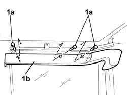
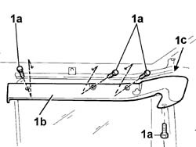

7020C40 Sliding side door upper guide TRIM (one), left or right - R.R.
- Path
- Procedures > 70 FITTINGS > 7020 LOAD CARRYING COMPARTMENT DOORS > 7020C sliding side door > 7020C40 Sliding side door upper guide TRIM (one), left or right - R.R.
- Kind
- repair procedure (removal / refitting; the operation number is the code)
- Applies to
- all engines; all production periods
- Interactive page
- https://sloeber94.github.io/elrnDB-fDbl/en/#/2585060
Applies to: all engines; all production periods; only with equipment: Doblò trim level
 Removing
Removing
 Refitting
Refitting1. Undo the bolts (1a) and remove the guide protection (1b).

Applies to: all engines; all production periods; only with equipment: Doblò trim level
Refitting
RemovingFit the guide protection and secure it with the bolts.
Applies to: engines: 1.6 16v, 1.3 JTD 16V, 1.9 JTD 8V; all production periods; only with equipment: 7 seater
Removing
Refitting1. Unscrew bolts (1a) and remove side trim (1b) by prising up from anchorage stud (1c).

Applies to: engines: 1.6 16v, 1.3 JTD 16V, 1.9 JTD 8V; all production periods; only with equipment: 7 seater
Refitting
RemovingPosition the side trim in its seat, insert the stud and tighten the bolts.
Topics that link to this page (6)
- 7020C13 Upper support and sliding DEVICE for one sliding side door, left or right - R.R.
- 7020C15 Upper sliding GUIDE for one sliding side door, left or right - R.R.
- 7020C16 SLIDING AND SUPPORTING ELEMENTS for one sliding side door, left or right - R.R.
- 7040H10 roof panel lining - r r
- 7040H12 Roof panel REAR TRIM - R.R.
- 7040H20 ROOF TRIM SEAL (ONE) - REPLACE